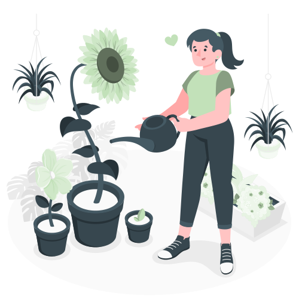

HOBBY
Volontariato
Volontaria WWF da qualche anno, nella sezione di Palermo in Sicilia mi occupavo del recupero
di animali selvatici feriti, pulizia spiaggia dai rifiuti
e costruzione "casette" per api nelle diverse parti verdi della città.
Attualmente aiuto associazioni locali nella gestione e pulizia di rifugi per animali, nonchè dare da mangiare
e soprattutto affetto ai pelosi a 4 zampe in cerca di casa.


Giardinaggio
Ho il pollice verde! A casa attualmente ho più di 50 piante, da tropicali alle grasse, da quelle marine o alle carnivore.
Sono un grande impegno, in quanto ogni specie ha bisogno di determinate cure come controllo dell'umidità dell'aria,
periodicità di fertilizzazione e baganture e anche controllare che non si formino afidi e insetti infestanti.
Richiedono responsabilità e attenzone, sono pur esseri viventi, ma prendermi cura di loro,
vederle crescere e trasformarsi mi suscita calma e tranquillità.
Sport
Si è capito che sono una persona sportiva?
Come accennato in altre sezioni, ho dedicato gran parte della mia vita al movimento.
Ho praticato nuoto agonistico, danza classica e hip hop, calisthenics, power yoga, bodybuilding, surf, skateboard, snowboard..
Ogni disciplina ha tirato fuori il meglio di me e rafforzato e/o definito il mio carattere.
Muoversi è vita!